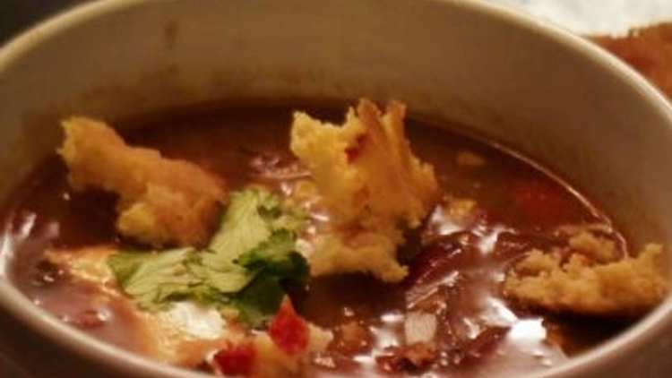

Chicken Tortilla Soup

Ingrediënten
6 theelepels Komijn
3 theelepels Chili poeder
1/2 theelepel Knoflook poeder
1/2 theelepel zout
2 kippenborstjes
2 theelepels olijfolie
1 kopje gesnipperde ui
1/4 kop groene paprika
1/4 kop rode paprika
3 teentjes fijngehakte Knoflook
1 blikje van 300g tomaten en groene chilipepers
4 kopjes Kippenbouillon
4 kopjes warm water
3 lepels tomatenpuree
2 blikken zwarte bonen van 450g
3 lepels maïsmeel
5 kleine maïstortilla's
1 in blokjes gesneden avocado
1 in blokjes gesneden rode ajuin
zure room
Gekapte koriander
Bereiding
Meng eerst de komijn, 1 theelepel chilipoeder, knoflookpoeder en zout. Besprenkel de kipfilets met 1 eetlepel van de olijfolie
Bestrooi vervolgens met 1 theelepel van het kruidenmengsel. Zet de rest van het kruidenmengsel opzij
Bak tot de kip helemaal gaar is, 15 tot 20 minuten. Haal hem uit de oven. Snijd de kip in blokjes en zet opzij
Verhit vervolgens de resterende 1 eetlepel olijfolie in een grote pan op middelhoog vuur. Gooi de uien, groene en rode paprika's en knoflook erin
Doe er een eetlepel van het kruidenmengsel bij dat gebruikt is om de kip te kruiden. Voeg een beetje extra chilipoeder toe (ongeveer 1/4 theelepel) voor de warmte
Roer de groenten tot ze goudbruin beginnen te worden, ongeveer 5 minuten
Voeg de in blokjes gesneden kip en de in blokjes gesneden tomaten toe, met sap en al. Voeg de kippenbouillon, het hete water en de tomatenpuree toe
Roer om te combineren en breng het mengsel aan de kook. Zet het vuur laag. Voeg de uitgelekte zwarte bonen toe
Meng vervolgens het maïsmeel met 1/2 kopje water
Voeg het mengsel toe aan de pan en laat de soep 10 tot 15 minuten sudderen
Proef en voeg zo nodig zout of kruiden toe!
Snijd de tortilla's in gelijkmatige repen van 2 tot 3 inch
Roer ze vlak voor het opdienen grotendeels door de soep
Schep de soep in een kom en voeg avocado, rode ui, zure room, koriander en extra tortillareepjes toe